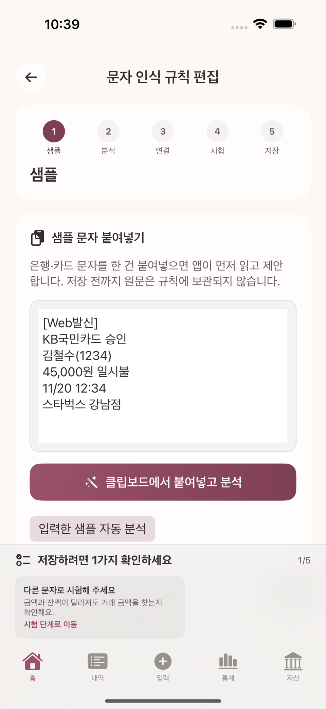
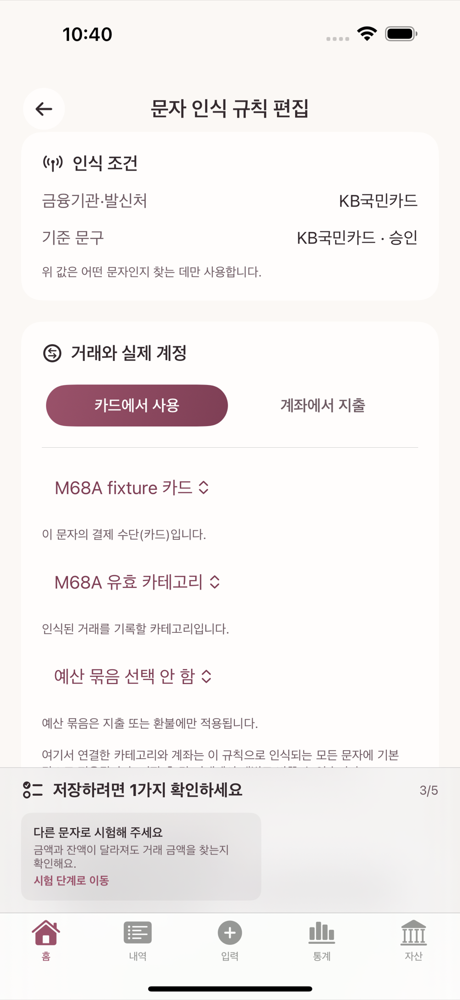
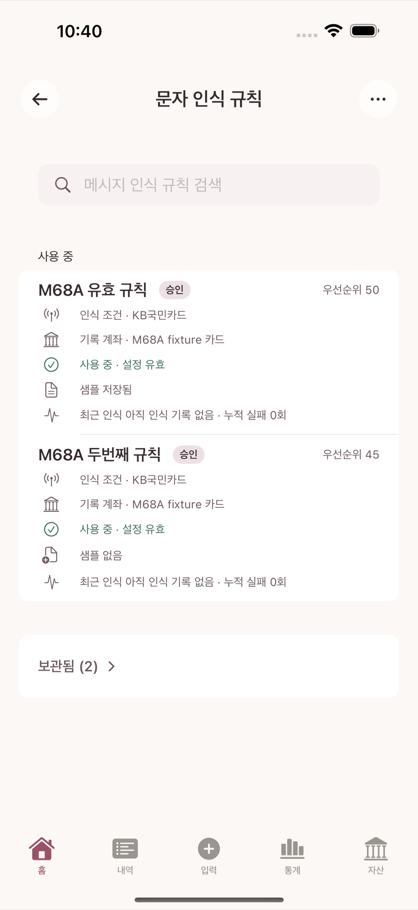

카드사·은행에서 오는 승인/입출금 문자를 그대로 붙여넣으면 금액·거래처·날짜 같은 값을 手동 입력 없이 채울 수 있다. 이 장에서는 이미 지원되는 형식을 확인하는 방법과, 지원되지 않는 새 형식을 위해 문자 인식 규칙을 직접 만드는 방법을 다룬다.
타미오는 문자함을 직접 읽지 않는다. 사용자가 알림·문자 앱에서 직접 복사해 입력 화면에 붙여넣은 텍스트만 처리하고, 그 텍스트는 기기 밖으로 전송되지 않는다. 규칙을 만들 때 넣는 sample 문자도 규칙의 참고 자료로 로컬에 저장될 뿐, 서버로 보내지지 않는다.
입력 화면에서 카드 승인/계좌 입출금 문자를 붙여넣으면, 이미 등록된 규칙과 일치할 경우 금액· 거래처·날짜 등이 자동으로 채워진다. 자동으로 저장되지는 않는다 — 채워진 값을 확인하고 저장 버튼을 눌러야 거래가 등록된다.
새로운 카드사나 낯선 문구 형식의 문자는 자동으로 채워지지 않을 수 있다. 이때 상단 메뉴에서 연 관리 화면의 문자 인식 규칙으로 들어가, 화면 우측 상단 메뉴에서 문자 인식 규칙 추가를 선택한다.
예시 문자(민감정보 제거, 실제 값 아님):
[Web발신]
예시카드(1234) 승인
12,000원 일시불
09/07 12:34
가맹점: 예시카페
규칙을 저장하기 전에 기록될 내용 미리보기 카드에서 추출된 금액·날짜·거래처와, 지정한 카테고리·결제수단 참조가 올바른지 확인한다. 원한다면 샘플 원문 보관 스위치로 이 sample 문자를 규칙에 남겨 나중에 다시 참고할 수 있게 한다. 여기서도 자동 저장은 없으며 사용자가 직접 저장을 눌러야 규칙이 등록된다.

규칙을 저장한 뒤, 같은 카드사에서 온 다른 금액의 새 문자를 붙여넣어 규칙이 올바르게 적용되는지 확인한다. 금액이나 날짜가 문자 안에서 조금씩 다른 형식으로 와도 규칙이 일관되게 인식하는지 점검한다.
만약 잘못 인식되면 규칙을 다시 열어 필드 지정을 고친다. 더 정확한 규칙으로 대체하고 싶으면 기존 규칙을 목록에서 보관으로 옮겨 둔다 — 보관된 규칙은 "보관됨" 섹션으로 옮겨가 더는 새 문자에 적용되지 않지만 완전히 지워지지는 않는다.

규칙 목록 화면의 순서 편집 버튼을 누르면 규칙을 드래그하거나 화살표로 옮겨 순서를 바꿀 수 있고, 이 순서가 곧 우선순위다. 여러 규칙이 같은 문자에 동시에 맞으면 다음 순서로 적용된다.